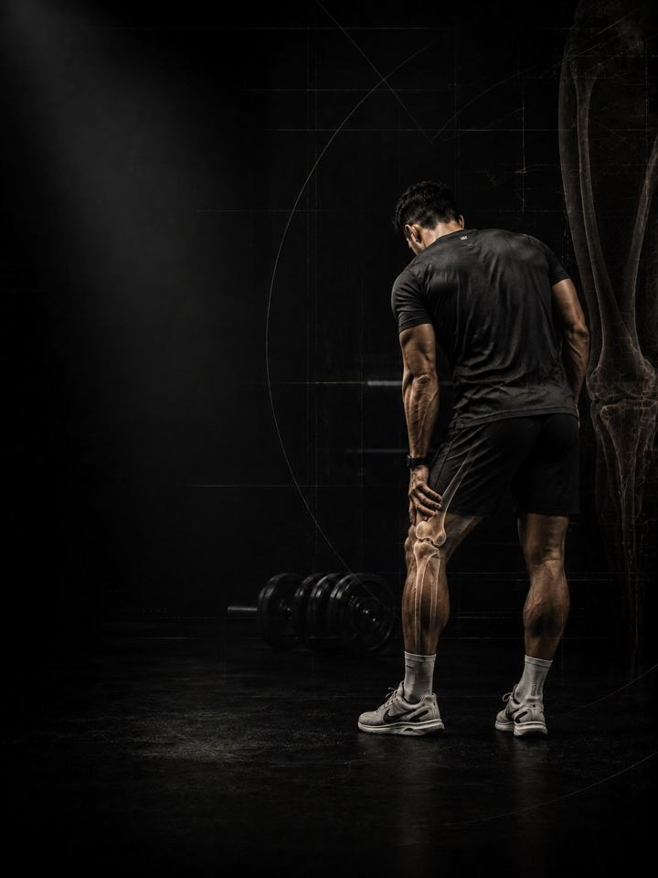

Knee Pain
Rebuild the knee's tolerance to load, and fix the hip and ankle that keep overloading it.
- Built foranyone with nagging knee pain who wants to keep training
- Schedulea 10–15 minute daily routine, plus 3 strength days a week
- Equipmentdaily routine needs a mat and a band. Strength days need a full gym.
- Formatmobile PDF, every exercise linked to a demo video
- Add any 12-week program for 45 KD in total (normally 55).
- Upgrade to 1:1 coaching within 30 days and this price comes off your first month.
The store opens soon. For now, Buy opens an Instagram message and you receive the PDF there.
Why knee pain keeps coming back
Most knee pain in active people is not damage. It is a capacity problem. The tissue around the kneecap and tendon is being asked for more than it has been trained to handle, usually because the hip above and the ankle below are not doing their share.
Rest settles it for a week, and it comes back the moment you train again, because rest never raised the capacity. This program does the opposite. It loads the knee deliberately and progressively, while restoring the hip strength and ankle range that decide how much force reaches the joint in the first place.
The five patterns behind most knee pain
The knee is a hinge between two joints that steer it, the hip and the ankle. It rarely fails on its own. It fails when it has to absorb what those two should have handled, or when its own tissue was never built up for the job. Most people recognise themselves in two or three of these. The program trains all five at once, so you don't need a perfect diagnosis to start.
-
Weak quads. The quadriceps are the knee's shock absorber, and the front of the knee complains first when they are undertrained. Stairs, hills and long sitting are the classic triggers, because in all of them the quad has to hold the kneecap steady under load. In the program: Leg Extension, Leg Press, Step-Downs
-
Knee drops inward (weak hip control). The knee caves in on squats, steps and landings because the glutes are not holding the thigh in line. The knee isn't the problem here. It is just where the badly aimed force lands. In the program: Clamshells, Banded Lateral Walks, Step-Downs
-
Stiff ankle (limited dorsiflexion). If the shin can't travel forward over the foot, the knee and hip have to make up the difference on every squat and stair. Getting back even a couple of centimetres of ankle range often takes more load off the knee than any knee exercise does. In the program: Ankle Mobilisation, Deep Squat Hold, Loaded Calf Stretch
-
No hip hinge (quad-dominant movement). When the hips don't hinge, every movement becomes a knee movement. Sitting down, picking things up and slowing down are all driven from the knee instead of shared with the hip and hamstrings. In the program: Romanian Deadlift, Hip Thrust, Hamstring Sliders
-
Weak calves and tendon. The calf absorbs the first part of every landing. When it tires early, the load moves straight up to the patellar tendon, which is why weak calves and jumper's knee tend to go together. In the program: Calf Raises, Hops, Lateral Bounds
Your pattern adds. The PDF lets you pick up to two patterns that sound most like you and add their exercises at the end of each strength day. Two is the cap. Adding all five just makes a longer session with no priority.
How the 6 weeks progress
The daily routine stays the same for all six weeks. The strength days move up a level every two weeks.
| Weeks 1–2 | Weeks 3–4 | Weeks 5–6 | |
|---|---|---|---|
| Phase | Control | Build | Integrate |
| Focus | Isolate the muscles and control the joint | Load the main patterns: leg press, step-downs, hinge | Single-leg work and landing |
| Looks like | Short-range leg extension, bridges, clamshells | Leg press, Romanian deadlift, reverse Nordic | Split squats, hops, lateral bounds, sled |
By phase 3 it looks like normal training, because it is.
The rules that make it work
- Position is the progression. The exercises move up every two weeks. Inside a phase you don't need new exercises. You need the next position.
- Week two of each phase is always harder than week one. It adds one set to the first two exercises and 5 seconds to every hold. This is set in the program, so you never have to guess.
- Move on only when you're ready. Go to the next phase when every set of the current one is clean and next-day symptoms are stable. If you're not there yet, repeat the week.
- Loads: add 2–2.5 kg once the top of a rep range is clean for two sessions in a row.
- Decisions follow numbers. You retest after weeks 3 and 6.
Why it trains through some pain
Rehab doesn't have to be pain-free. It has to be controlled. The program uses the same pain scale that sports rehab uses: 0–2 out of 10 is fine, 3–5 is acceptable, and above 5 means you stop and adjust. The two rules that matter more than the number are that pain settles by the next morning, and that your day-to-day baseline trends down across the six weeks.
Why you keep training
The knee needs load, not rest. The program includes a short list of lifts to swap out for a while (such as deep back squats and box jumps), so you can keep training while the knee rebuilds.
How you'll measure progress
Four tests, ten minutes, no equipment: a filmed step-down, knee-to-wall ankle range, a single-leg sit-to-stand and single-leg calf raises. You do them before week 1, then after weeks 3 and 6, and record them on the score sheet in the PDF.
What good progress looks like
- Weeks 1–2: stair pain and morning stiffness ease first.
- Weeks 3–4: the knee-to-wall number grows and the step-down stops caving.
- Weeks 5–6: sit-to-stand and calf-raise counts climb, and training stops causing next-day soreness.
If nothing has moved by the week 3 retest, get a professional assessment instead of pushing harder.
Finishing standard at week 6: stairs and sit-to-stand at 2/10 pain or less for two straight weeks, 20 single-leg calf raises per side, a side-to-side sit-to-stand gap under 25%, and a filmed step-down with the knee tracking over the foot on all ten reps. If you miss one, repeat phase 3 for two weeks and retest.
Before you buy: see a doctor first if
- The knee gave way or locked, or you heard a pop when it was injured.
- Swelling came on within hours, or the knee won't fully straighten.
- The pain started after a direct blow, or after a twist with the foot planted.
- There's redness, heat or fever with the pain, or night pain that wakes you.
This program is for general pain management and prevention. It does not replace a medical assessment.
- Add any 12-week program for 45 KD in total (normally 55).
- Upgrade to 1:1 coaching within 30 days and this price comes off your first month.
The store opens soon. For now, Buy opens an Instagram message and you receive the PDF there.
What's next
After 6 weeks:
- Build strength and muscle: Foundation Strength
- Train like an athlete: Athletic Development
- Another area needs work: the Corrective series
Want it built around you? One-to-one coaching through the Trainerize app. DM @a_bouzubar with "COACHING".